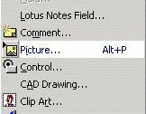

Attention: before something to do, create a copy of files which be going to modify.
For creation own "hot keys" the following program is required to us, Resorce Hacker. With its help we should open a file "VisRes32.dll". Further it is necessary for you to execute a number of actions:
1) To choose an interesting command and its number from the list of DoCMD-commands, используя поиск. using search. For example, command Insert>Picture.

2) Both to make precisely same command and to write down in the end of the list. For example our command will be execute by combination Alt+P.

And accordingly our command will be written down so:
VK_P, 1007, NOINVERT, ALT, VIRTKEY and it it is necessary to write down so.

And to press Compile Script. Further it is necessary to make the same in "32002">"1033". We keep changes and it is opened Visio.

Also we observe our work. And so it is possible to add necessary other "hot keys".
Articles page Next article Author: Nichkov Alexey (a.k.a. Digitall)